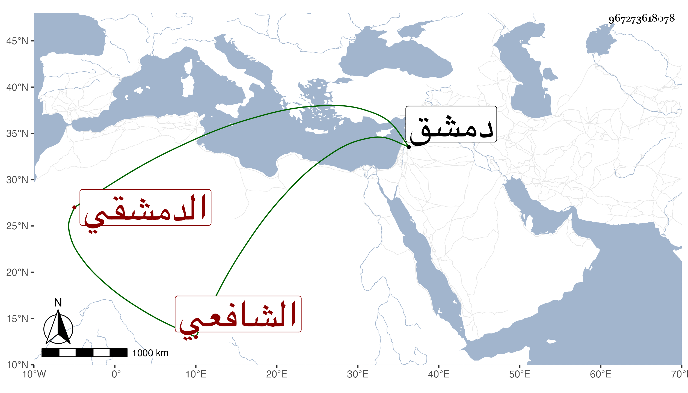

0902Sakhawi.DawLamic.ITO20230111-ara1.EIS1600.967273618078
Biography ID: 967273618078
أحمد بن عبد الرحمن بن محمد بن محمد بن شرف بن منصور الشهاب بن الزين الدمشقي الشافعي أخو إبراهيم الماضي وغيره ووالد العلاء علي الحنفي الآتي ويعرف كسلفه بابن قاضي عجلون . اشتغل على الشرف الغزي وباشر التوقيع عند أركماس الدوادار ثم في أول ربيع الآخر سنة ثلاث وأربعين ولي كتابة السر بدمشق بعد البهاء بن حجي ثم صرف عنها في ربيع الأول من التي تليها بالصلاح خليل بن السابق . ومات في ليلة الخميس تاسع عشري ذي الحجة سنة إحدى وستين رحمه الله .
